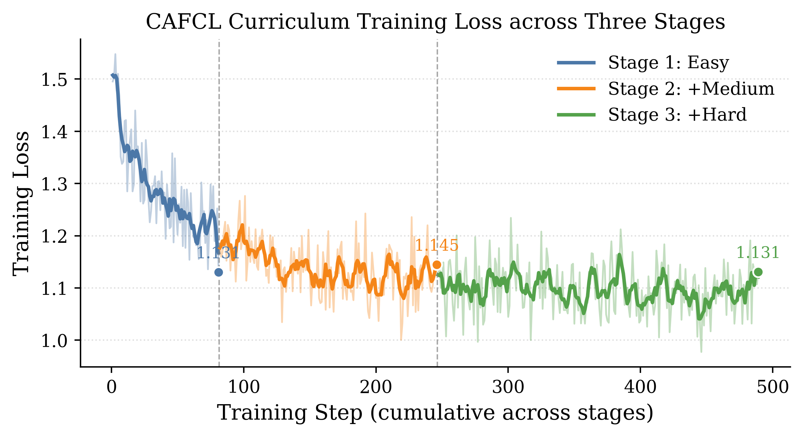

筛选数据
从指令复杂度、代码可执行性与指令代码对齐三个维度筛选训练样本。
prepare_data.py01 / RESEARCH
CAFCL 把数据筛选与课程安排连接起来：先检查质量，再衡量复杂度，最后按难度逐步训练。
从指令复杂度、代码可执行性与指令代码对齐三个维度筛选训练样本。
prepare_data.py按照复杂度组织三个累积阶段：简单、简单加中等，以及全部筛选后的数据。
run_b4_cafcl.sh使用 HumanEval 生成并评测代码，与随机训练和仅筛选数据的基线对比。
eval_humaneval.py02 / PUBLICATION
从方法描述到实验脚本，
把研究过程留在可阅读的地方。
陈祺新 · 论文配套项目
面向代码生成微调，结合复杂度感知的数据质量筛选与渐进式课程学习。论文全文、训练代码及实验曲线均可访问。
下载 PDF ↓03 / EXPERIMENT
项目记录的 CAFCL 三阶段训练曲线。切换阶段时加入更复杂的样本，观察损失随课程推进的变化。

KEEP EXPLORING